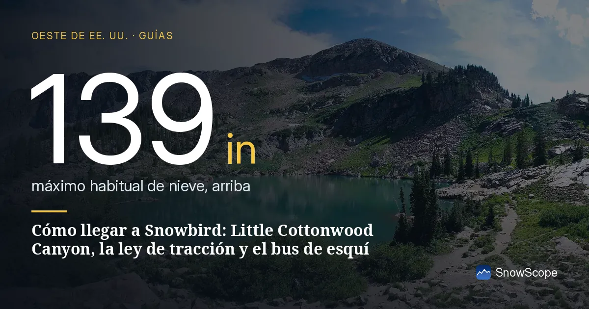
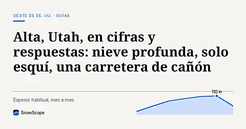

Cómo llegar a Snowbird: Little Cottonwood Canyon, la ley de tracción y el bus de esquí
Snowbird está solo en la parte superior de Little Cottonwood Canyon (SR-210), que comparte con Alta. La única carretera del cañón es rápida en días despejados y lenta cuando llegan tormentas, así que tus neumáticos, la hora a la que salgas y el pronóstico del tiempo condicionan tu viaje más que la distancia.
Consulta la previsión de nieve en tiempo real de Snowbird en la app SnowScopeEspesor de nieve, alertas de nieve polvo y mapa 3D, gratis.

Dónde está Snowbird
Snowbird se encuentra a unos 47 km al sureste del Aeropuerto Internacional de Salt Lake City y a 39 km del centro. La boca del cañón comienza cerca de Sandy, a 6 km al oeste. Una vez que entras en el cañón por la SR-210, solo hay una ruta de entrada y salida, así que UDOT advierte a los conductores de que la carretera es un callejón sin salida en invierno. Lleva suministros y combustible para el día si vas a conducir.
La subida vertical desde la boca del cañón hasta el resort es pronunciada: unos 488 m en esos últimos kilómetros. El tiempo de conducción depende del tiempo y del tráfico, no solo de la distancia.

La norma de tracción: cuándo se aplica y qué neumáticos necesitas
Cuando los balizadores intermitentes de UDOT se activan en las entradas del cañón, la norma de tracción entra en vigor en las SR-210 y SR-190. UDOT puede hacerla cumplir hasta 24 horas antes de que llegue una tormenta. Todos los neumáticos deben tener al menos 4 mm de profundidad de dibujo.
Si tu coche tiene tracción en las cuatro ruedas o tracción total, necesitas neumáticos de invierno (clasificación M+S) en las cuatro ruedas. Si es de tracción trasera o delantera, debes montar neumáticos clasificados para nieve (símbolo 3PMSF) en las cuatro ruedas, o llevar cadenas o calcetines de nieve para dos ruedas motrices. Los coches de alquiler desde Salt Lake City a menudo tienen neumáticos de todas las estaciones: comprueba la clasificación del neumático antes de reservar, o elige el autobús.
Olvida el coche: autobús UTA ruta 994 y autobuses Canyon Service
La ruta 994 de UTA y Canyon Service tienen autobuses directos por Little Cottonwood Canyon hasta Snowbird y Alta. El horario del autobús de esquiadores funciona normalmente desde principios de diciembre hasta mediados de abril. Si los resorts abren antes de lo normal en la temporada, UTA puede empezar los autobuses antes. Usa la aplicación Transit o visita la web de UTA para comprobar el horario antes de ir.
En un día de polvo intenso, el autobús resuelve dos problemas a la vez: evitas la cola en el aparcamiento y te ahorras el estrés de conducir solo en tráfico de tormenta. El autobús sale de la estación del centro de Salt Lake City y del aeropuerto.
Antes de salir: comprueba el estado de la carretera
UDOT publica un feed de estado en directo para las SR-190 y SR-210 que lista cierres, normas de tracción y enlaces a cámaras de carretera. Si no aparece ninguna alerta, las carreteras están abiertas sin restricciones previstas. Comprueba el feed antes de salir de Salt Lake City, y compruébalo de nuevo antes de bajar por la tarde.
La única carretera del cañón se llena rápidamente en nieve fuerte. Salir temprano en un día de tormenta no es solo por comodidad: es para no quedarte atrapado o retrasado durante horas.
Por qué el cañón merece el esfuerzo
La recompensa por conducir o coger autobús por Little Cottonwood Canyon es profundidad. A media montaña, alrededor de 2 852 m, la profundidad típica máxima de nieve en inviernos pasados fue de 244 cm. La base está más abajo, a 2 365 m, donde la máxima típica fue de 133 cm. La nieve cubre el terreno unos 220 días cada invierno a media montaña, normalmente más profunda en marzo.
El invierno pasado (2025-26) fue seco: el máximo a media montaña alcanzó solo 143 cm. Pero en un invierno normal, el cañón atrapa tormentas del Pacífico y mantiene la nieve en las cotas. La ganancia de elevación mientras subes importa—las laderas superiores a 3 340 m ven un máximo típico de 352 cm.
Consejos para esquiadores
- Comprueba el feed de estado de Cottonwood Canyons de UDOT en tu teléfono antes de subir y antes de bajar. Un feed en directo es mejor que un pronóstico.
- Los neumáticos importan más que la tracción en las cuatro ruedas. Tracción trasera o delantera con neumáticos de invierno supera tracción en cuatro ruedas con neumáticos de todas las estaciones cuando se aplican las normas de tracción.
- En una mañana de polvo o en nieve fuerte, coge el autobús. Llegarás más tranquilo, aparcarás más fácil, y ayudarás a que la carretera del cañón fluya más rápido.
- Sal del valle temprano en un día de tormenta. La única carretera del cañón se vuelve lenta en menos de una hora de nieve fuerte.
- Si vas al backcountry desde el cañón, comprueba primero el boletín del Utah Avalanche Center.
Sobre estas cifras
Los espesores de nieve de las estaciones son la nieve más profunda en las pistas altas en la fecha indicada; son estimaciones para una zona, no una medida en un punto. Las previsiones pueden cambiar. Consulta siempre el boletín oficial de aludes antes de salir fuera de pista.
Boletines oficiales de aludes: Utah Avalanche Center
Citar este informe
Para investigación, docencia o prensa: cifras y gráficos reutilizables libremente bajo CC BY 4.0 con esta cita.
SnowScope (2026), Cómo llegar a Snowbird: Little Cottonwood Canyon, la ley de tracción y el bus de esquí, https://snowscope.app/blog/es/2026/11/how-to-get-to-snowbird-little-cottonwood-canyon.html, consultado el 2026-11-09
SnowScope (Atlas Labs). (2026, November 9). Cómo llegar a Snowbird: Little Cottonwood Canyon, la ley de tracción y el bus de esquí. SnowScope snow reports. https://snowscope.app/blog/es/2026/11/how-to-get-to-snowbird-little-cottonwood-canyon.html
BibTeX
@misc{snowscope2026howtogettosnowbirdlittle,
author = {{SnowScope (Atlas Labs)}},
title = {Cómo llegar a Snowbird: Little Cottonwood Canyon, la ley de tracción y el bus de esquí},
year = {2026},
month = nov,
howpublished = {\url{https://snowscope.app/blog/es/2026/11/how-to-get-to-snowbird-little-cottonwood-canyon.html}},
note = {Published 2026-11-09 18:47 UTC; accessed 2026-11-09}
}· CC BY 4.0 · Métodos, datos y herramientas →
Snowbird: nieve y temperatura según la altura, este invierno vs el pasado (herramientas) →
Sigue Snowbird
Gratis: un aviso cuando llega la nieve y la previsión cada mañana.
Más partes de nieve

Unas 109 in (276 cm) es el pico habitual de Alta a media montaña en 46 inviernos pasados. Aquí: por qué el snowboard se queda en casa, los mejores meses y cómo subir el cañón.

Vail en cifras: un pico habitual de unas 64 in (162 cm) a media montaña en 46 inviernos pasados, marzo el mes más nevado, más terreno, acceso y seguridad.

Steamboat, Colorado, en familia: qué funciona para los más pequeños, los niños, los adolescentes y los padres, con la nieve de 46 inviernos pasados a tres alturas.